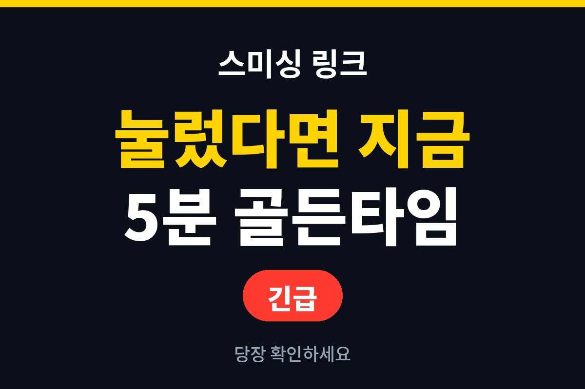
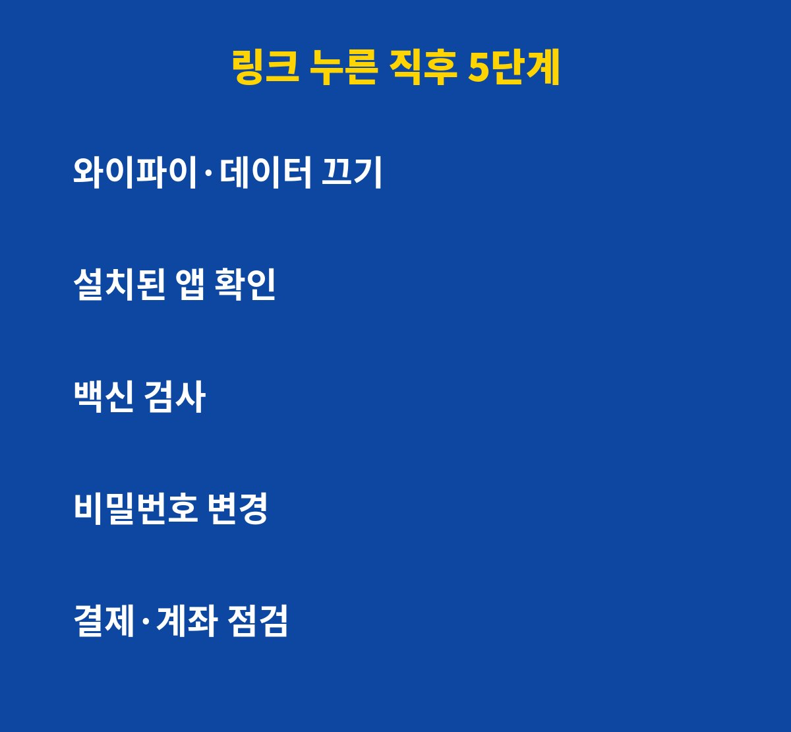
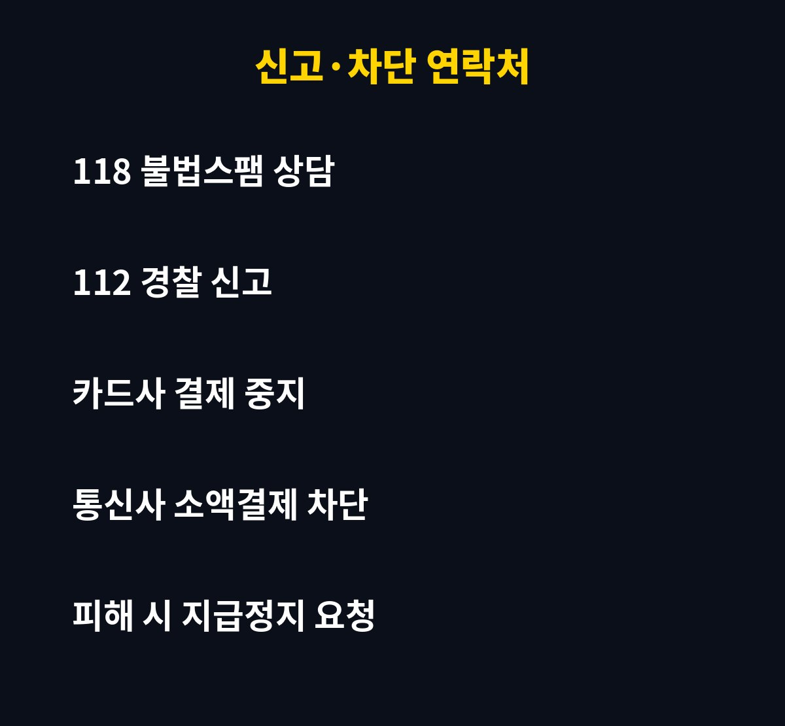

스미싱 링크를 눌렀다면 가장 먼저 할 일은 데이터와 와이파이를 끄는 것이고, 이 첫 5분이 피해 규모를 갈라요. 택배·청첩장·과태료 문자를 눌러본 분이라면 이미 늦었다고 생각하기 쉬운데, 그런데 순서만 지키면 오히려 피해 없이 끝날 수 있어요. 이유는 아래에 있어요.
스미싱 링크, 눌렀는데 왜 바로 위험할까요?
문자 속 링크를 누르면 가짜 사이트로 연결되거나 악성 앱 설치를 유도하는 경우가 많아요. 링크만 눌렀다고 곧바로 털리는 건 아니지만, 앱을 설치하거나 개인정보·인증번호를 입력했다면 이야기가 달라져요.
특히 악성 앱은 문자 수신, 연락처, 화면 제어 권한을 요구해요. 이 권한을 허용하는 순간 인증 문자가 그대로 넘어갈 수 있어요. 그래서 링크를 눌렀는지, 앱을 깔았는지, 정보를 입력했는지를 먼저 구분해야 해요.

눌렀다면 5분 안에 뭘 먼저 해야 할까요?
순서가 중요해요. 아래대로 차근차근 하면 돼요.
1. 비행기 모드를 켜거나 와이파이·데이터를 꺼서 외부 전송을 끊어요.
2. 설정에서 최근 설치된 앱을 확인하고 모르는 앱은 삭제해요. 삭제가 안 되면 기기관리자 권한부터 해제해요.
3. 백신 앱이나 휴대폰 기본 보안 검사를 돌려요.
4. 다른 기기에서 주요 계정 비밀번호를 바꿔요.
5. 카드·은행 앱에서 낯선 결제나 이체가 없는지 확인해요.
이미 정보를 입력했다면 어디에 연락해야 할까요?
개인정보나 카드번호, 인증번호를 입력했다면 지체할수록 불리해요. 아래 표를 저장해두세요.
| 상황 | 할 일 |
| 링크만 눌렀다 | 데이터 끄고 앱 설치 여부 확인 |
| 앱까지 설치했다 | 앱 삭제, 백신 검사, 비밀번호 변경 |
| 정보를 입력했다 | 카드사·은행에 즉시 연락해 결제·이체 중지 |
| 돈이 빠져나갔다 | 112 신고, 금융사에 지급정지 요청 |

소액결제 피해, 미리 막을 수는 없을까요?
통신사에 소액결제 차단을 걸어두면 문자 한 번에 결제되는 피해를 크게 줄일 수 있어요. 잘 쓰지 않는다면 차단해두는 게 마음 편해요. 불법스팸 문자는 118에 신고하거나 문자 앱의 스팸 신고 기능을 쓰면 돼요.
또 출처가 불분명한 링크는 눌러보기보다 공식 앱이나 공식 사이트에서 직접 조회하는 습관이 가장 안전해요. 택배라면 택배사 앱, 과태료라면 정부 공식 앱에서 확인하면 돼요. 문자에 적힌 번호로 전화하는 것도 피하세요.
스미싱 링크, 5분 안에 할 일 체크리스트
링크를 눌렀다면 아래 순서로 움직이세요.
몰랐다면 결국 털린다는 경고가 나오는 건, 대처가 늦을수록 피해가 커지기 때문이에요.
- 비행기 모드로 바꿔 인터넷을 끊어요.
- 모르는 앱이 깔렸는지 확인하고 삭제해요.
- 금융앱 비밀번호를 다른 기기에서 바꿔요.
- 통신사에 소액결제 차단을 요청해요.
- 정보를 입력했다면 은행과 경찰에 바로 신고해요.
많이들 하는 실수는 링크를 누른 그 폰으로 바로 은행 앱에 들어가 확인하는 거예요.
악성 앱이 깔렸다면 입력하는 내용이 그대로 새어 나갈 수 있어서, 확인과 비밀번호 변경은 다른 기기에서 하는 게 안전해요.
또 아무 일 없어 보인다고 바로 잊어버리는 것도 위험해요.
며칠 동안은 결제 문자와 통장 내역을 한 번씩 확인해 주세요.
스미싱 링크는 대부분 급하게 눌러 보게 만드는 문구로 와요.
한 번 눌렀다고 너무 겁먹기보다, 순서대로 대처하는 게 가장 중요해요.
가족 단톡방에 이 순서를 한 번 공유해 두면 급할 때 큰 도움이 돼요.
특히 부모님은 링크를 눌렀다는 사실을 자녀에게 말하기 어려워하시는 경우가 많아요.
눌렀으면 바로 말해도 된다고 미리 이야기해 두는 것만으로도 대처가 빨라져요.
통신사 앱의 스팸 차단 기능도 함께 켜 두세요.
미리 알아 두면 당황하지 않아요.
가족과 이 순서를 한 번 공유해 두세요.
급할 때 큰 도움이 돼요.
한 번 눌렀다고 너무 겁먹어야 할까요?
눌렀다는 사실보다 그 뒤의 행동이 훨씬 중요해요. 놀라서 아무것도 안 하고 시간을 보내는 게 제일 위험해요. 오늘 알려드린 순서를 캡처해두면 당황스러운 순간에 큰 도움이 돼요.
이런 생활 밀착 IT 보안 정보가 도움이 되셨다면 구독해두세요. 다음 글에서 또 필요한 내용만 골라 알려드릴게요.
기사·공식 발표 기준이며 출시·가격 정보는 바뀔 수 있어요.